Using Samba
Robert Eckstein, David Collier-Brown, Peter Kelly1st Edition November 1999
1-56592-449-5, Order Number: 4495
416 pages, $34.95
|
|
|
|
|
Using SambaRobert Eckstein, David Collier-Brown, Peter Kelly1st Edition November 1999 1-56592-449-5, Order Number: 4495 416 pages, $34.95 |
3.2 Setting Up Windows NT 4.0 Computers
Configuring Windows NT is a little different than configuring Windows 95/98. In order to use Samba with Windows NT, you will need both the Workstation service and the TCP/IP protocol. Both come standard with NT, but we'll work through installing and configuring them because they may not be configured correctly.
There are six basic steps:
3.2.1 Basic Configuration
This section presents an outline of the steps to follow for getting Windows NT to cooperate with Samba. If you need more details on Windows NT network administration, refer to Craig Hunt and Robert Bruce Thompsom's Windows NT TCP/IP Network Administration (O'Reilly), an excellent guide. You should perform these steps as the "Administrator" user.
3.2.1.1 Name the machine
The first thing you need to do is to give the machine a NetBIOS name. From the Control Panel, double click on the Network icon. This will take you to the Network dialog box for the machine. The first tab in this dialog box should be the Identification tab, as illustrated in Figure 3.16.
Figure 3.16: Network panel Identification tab
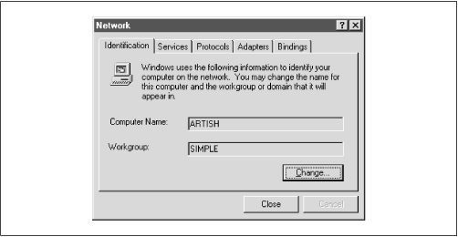Here, you need to identify your machine with a name (we use the name Artish here) and change the default workgroup to the one you specified in the smb.conf file of your Samba server. In this case, the workgroup name is SIMPLE. However, you cannot edit either name here (as you could in Windows 95/98), but instead must use the Change button below the two text fields. Pressing this button raises an Identification Changes dialog box, where you can reset the workgroup and the machine name, as shown in Figure 3.17.
Figure 3.17: Changing the identification
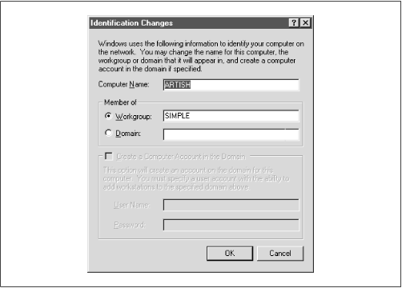A word of warning: you will have to set the machine name again later while configuring TCP/IP, so be sure that the two names match. The name you set here is the NetBIOS name. You're allowed to make it different from the TCP/IP hostname, but doing so is usually not a good thing. Don't worry that Windows NT forces the computer name and the workgroup to be all capital letters; it's smart enough to figure out what you mean when it connects to the network.
3.2.1.2 Installing the TCP/IP protocol
Next, select the Protocols tab in the Network dialog box, and look to see if you have the TCP/IP protocol installed, as shown in Figure 3.18.
Figure 3.18: The Protocols tab
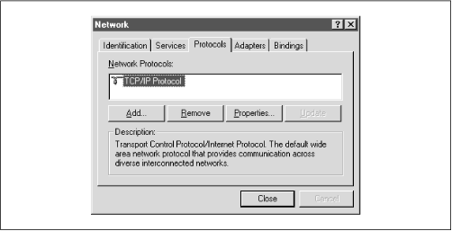If the protocol is not installed, you need to add it. Press the Add button, which will display the Select Network Protocol dialog box shown in Figure 3.19. Unlike Windows 95/98, you should immediately see the TCP/IP protocol as one of the last protocols listed.
Figure 3.19: Select Network Protocol dialog box
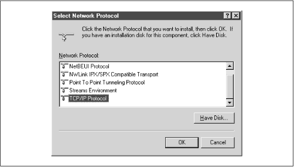Select TCP/IP as the protocol and confirm it. If possible, install only the TCP/IP protocol. You usually do not want NetBEUI installed because this causes the machine to look for services under two different protocols, only one of which is likely in use.[ 2]
[2] A common occurrence: after looking at the unused protocol for a while, the machine will time out and try the good one. This fruitless searching gives you terrible performance and mysterious delays.
3.2.1.3 Installing the Workstation service
After installing TCP/IP, press the Services tab in the Network panel and check that you have a Workstation service, as shown at the end of the list in Figure 3.20.
Figure 3.20: Network Services panel dialog box
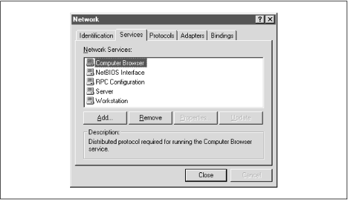This service is actually the Microsoft Networking Client, which allows the machine to access SMB services. The Workstation service is mandatory. The service is installed by default on both Windows NT Workstation 4.0 and Server 4.0. If it's not there, you can install it much like TCP/IP. In this case you need to press the Add button and then select Workstation Service, as shown in Figure 3.21.
Figure 3.21: Select Network Service dialog box
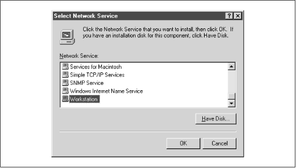3.2.2 Configuring TCP/IP
After you've installed the Workstation service, return to the Protocols tab and select the TCP/IP Protocol entry in the window. Then click the Properties button below the window. The Microsoft TCP/IP Protocol panel will be displayed. There are five tabs on the Windows NT panel, and (like Windows 95/98) you will need to work on three of them:
3.2.2.1 IP Address tab
The IP Address tab is shown in Figure 3.22.
Figure 3.22: Microsoft TCP/IP Properties for Windows NT
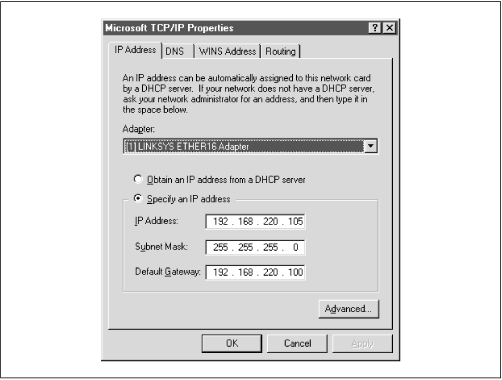Select the "Specify an IP address" radio button and enter the computer's address and subnet mask in the space provided for the proper adapter (Ethernet card). You or your network manager should have selected an address for the client on the same subnet (LAN) as the Samba server. For example, if the server's address is 192.168.236.86 and its network mask 255.255.255.0, you might use the address 192.168.236.10, if it is available, for the NT workstation, along with the same netmask. If you use DHCP on your network, select the "Obtain an IP Address from a DHCP server" button.
If you don't have an IP address to use, and you are on a network by yourself, steal ours, as the 192.168. x.x subnet is specifically reserved by the Internic for LANs. If you're not by yourself, see your system administrator for some available addresses on your network.
The gateway field refers to a machine typically known as a router. If you have routers connecting multiple networks, you should put in the IP address of the one on your subnet.
3.2.2.2 DNS tab
Next we go to the tab for DNS, as shown in Figure 3.23. This brings up the DNS panel.
Figure 3.23: The DNS panel
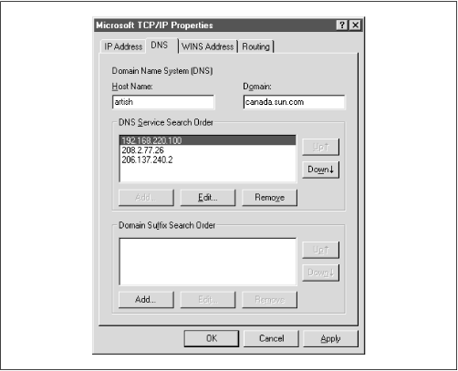The Domain Name System (DNS) is responsible for translating human-readable computer names such as atrish.example.com into IP addresses such as 192.168.236.10. There are two ways to accomplish this on a NT machine. First, you can specify a DNS server to do the translation for you, or you can keep a local list of name/address pairs for your workstation to refer to.
For a LAN that's not on the Internet, the list of possible hosts is typically small and well known, and may be kept in a file locally. Networks that are connected to the Internet typically use DNS service since it isn't possible to guess ahead of time what addresses you might be accessing out on the net. If you are in doubt as to whether a DNS server is being used, or what its address might be, look at the file /etc/resolv.conf on your Samba server: any machine using DNS will have this file. It looks like the following:
#resolv.conf domain example.com nameserver 127.0.0.1 nameserver 192.168.236.20In this example, the first nameserver in the list is 127.0.0.1, which indicates that the Samba server is also a DNS server for this LAN.[ 3] In that case, you would use its network IP address (not 127.0.0.1, its localhost address) when filling in the DNS Configuration dialog box. Otherwise, use the other addresses you find in the lines beginning with
nameserver. Try to select ones on your own network. Any name servers listed in /etc/resolv.conf should work, but you'll get better performance by using a server nearby.[3] The address 127.0.0.1 is known as the localhost address, and always refers to itself. For example, if you type
ping 127.0.0.1on a Unix server, you should always get a response, as you're pinging the host itself.Finally, enter the machine name once more, making sure that it's the same one listed in the Identification tab of the Network dialog box (before the NetBIOS name). Also, enter the DNS domain on which this machine resides. For example, if your workstation has a domain name such as example.com, enter it here. You can safely ignore the other options.
3.2.2.3 WINS Address tab
If you are not using a DNS server, you still need a way of translating NetBIOS names to addresses and back again. We recommend that you configure both DNS and WINS; NT has a preference for WINS and WINS can use DNS as a fallback if it cannot resolve any machine address. The WINS Address tab is shown in Figure 3.24.
Figure 3.24: The WINS Address tab
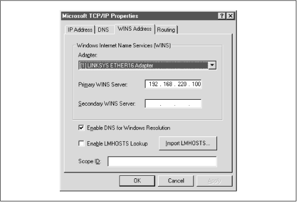If you have a WINS server, enter its address in the space marked Primary WINS Server. If your Samba server is providing WINS service (in other words, you have the line
winsservice=yesin the smb.conf file of your Samba server), provide the Samba server's IP address here. Otherwise, provide the address of another WINS server on your network.You probably noticed that there is a field here for the adaptor; this field must specify the Ethernet adaptor that you're running TCP/IP on so that WINS will provide name service on the correct network. If you have both a LAN and a dialup adaptor, make sure you have the LAN's adaptor here.
Finally, select the "Enable DNS for Windows Resolution" checkbox, so WINS will try DNS as a fallback if it can't find a name. You can safely ignore the other options.
3.2.2.4 Hosts files
If you don't have either DNS or WINS, and you don't wish to use broadcast name resolution, you'll need to provide a table of IP addresses and hosts names, in standard Unix /etc/hosts format. We recommend against this because maintenance of this file on any dynamic network is troublesome, but we will explain it just the same. The Windows host file should appear in the \WINDOWS\HOSTS directory of whatever local drive Windows is installed on. A sample follows:
127.0.0.1 localhost 192.168.236.1 escrime escrime.example.com 192.168.236.2 riposte riposte.example.com 192.168.236.3 wizzin wizzin.example.com 192.168.236.4 touche touche.example.com 192.168.236.5 gurgi gurgi.example.com 192.168.236.6 jessiac jessiac.example.com 192.168.236.7 skyline skyline.example.comIf you wish, you can copy the contents directly from the Samba server's /etc/hosts. The format is identical. This file will then serve the same purpose as the hosts file on the Unix server. Again, hosts files on Windows should only be used as a last resort.
3.2.2.5 Bindings
The term bindings is a way of saying "connected together at configuration time." It means that the TCP/IP protocol will channel through the Ethernet card (instead of, say, a dialup connection), and is actually connected properly. If you return to the Network dialog box and set the Show field to "all services" and click on all the + buttons in the tree, you should see a display similar to Figure 3.25.
Figure 3.25: Service bindings
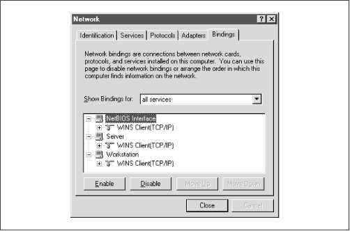This means that the Workstation, Server, and NetBIOS interface services are connected to the WINS client. This is the correct binding for Microsoft TCP/IP.
3.2.3 Connecting to the Samba Server
You can safely leave the default values for the remainder of the tabs in the Network dialog box. Click on the OK button to complete the configuration. Once the proper files are loaded (if any), you will need to reboot in order for your changes to take effect.
Now for the big moment. Your Samba server is running and you have set up your NT client to communicate with it. After the machine reboots, login and double-click the Network Neighborhood icon on the desktop, and you should see your Samba server listed as a member of the workgroup, as shown in Figure 3.26.
Figure 3.26: Windows NT Network Neighborhood
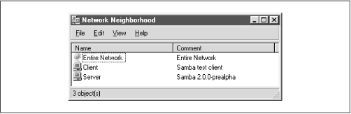Double-clicking the server name will show the resources that the server is offering to the network, as shown in Figure 3.27. In this case, the test and the default printer are offered to the Window NT workstation. For more information, see the warning under the "Accessing the Samba Server" section, earlier in this chapter.
Figure 3.27: Server's shares
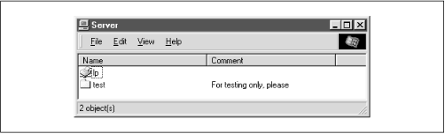WARNING: If you are presented with a dialog requesting the password for a user
IPC$, then Samba did not accept the password that was sent from the client. In this case, the username and the password that were created on the client side must match the username/password combination on the Samba server. If you are using Windows 98 or Windows NT Service Pack 3 or above, this is probably because the client is sending encrypted passwords instead of plaintext passwords. You can remedy this situation by performing two steps on the Samba server. First, add the following entry to the[global]section of your Samba configuration file:encrypt password=yes. Second, find the smbpasswd program on the samba server (it is located in /usr/local/samba/bin by default) and use it to add an entry to Samba's encrypted password database. For example, to add usersteveto Samba's encrypted password database, typesmbpasswd -a steve. The first time you enter this password, the program will output an error message indicating that the password database does not exist; it will then create the database, which is typically stored in /usr/local/samba/private/smbpasswd.If you don't see the server listed, don't panic. Start the Windows NT Explorer (not Internet Explorer!) and select Map Network Drive from the Tools menu. A dialog box appears that allows you to type the name of your server and its share directory in Windows format. For example, you would enter \\
server\temp if your server happened to be named "server." If things still aren't right, go directly to the section "The Fault Tree" in Chapter 9, to see if you can troubleshoot what is wrong with the network.If it works, congratulations! Try writing to the server and sending data to the network printer. You will be pleasantly surprised how seamlessly everything works! Now that you've finished setting up the Samba server and its clients, we can starting talking about how Samba works and how to configure it to your liking.
 |
 |
 |
| 3.1 Setting Up Windows 95/98 Computers |
 | 3.3 An Introduction to SMB/CIFS |
Back to: Using Samba
© 1999, O'Reilly & Associates, Inc.